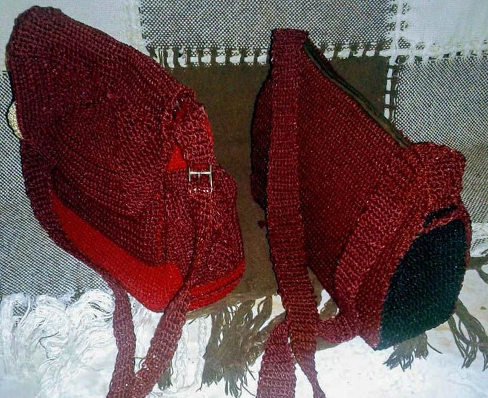
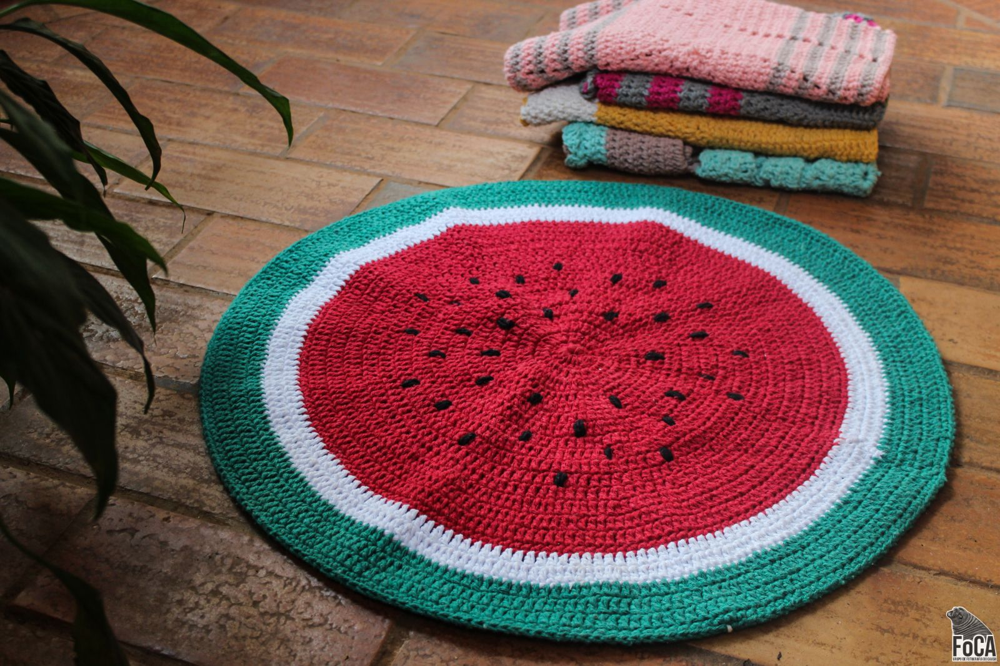
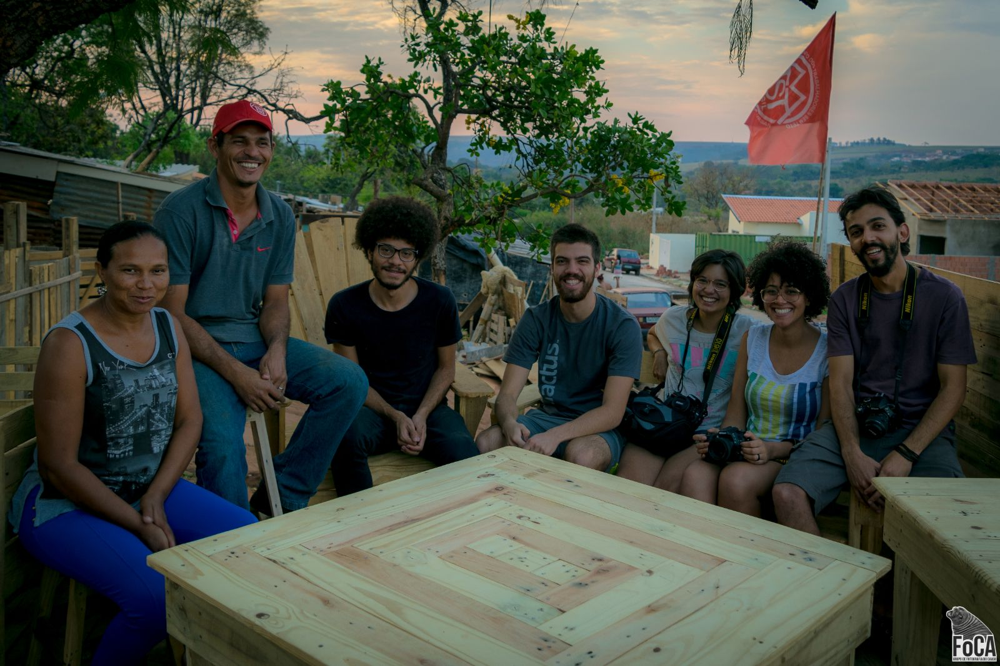
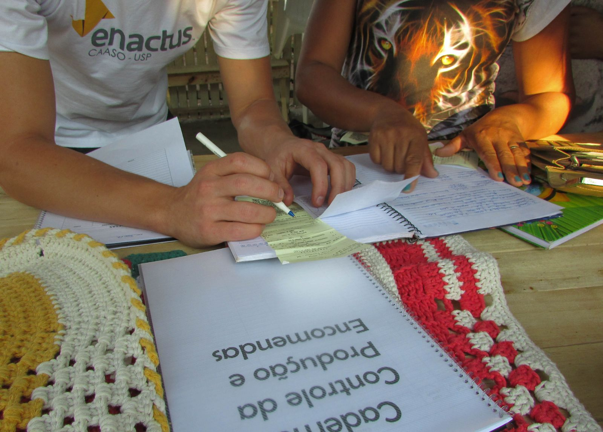
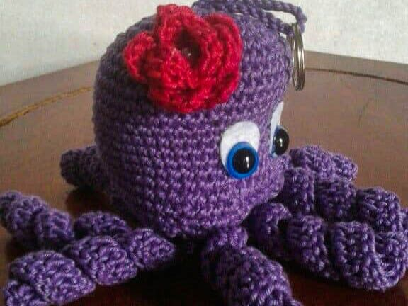
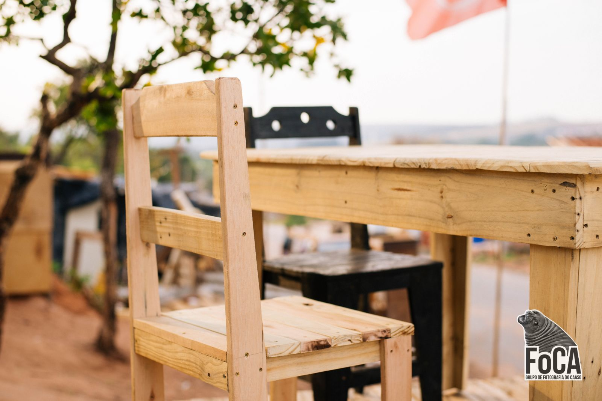

Melius
Qualidade de vida e acesso a direitos básicos para os moradores da Ocupação em Busca de um Sonho.

- Comunidade
- Ocupação em Busca de um Sonho
- Período
- 2017 a 2019
- Negócios entregues
- Marcenaria e ateliê
- Status
- Entregue à comunidade
O projeto
Renda, alimentação, educação e moradia.
O projeto Melius foi fundado em 2017 para promover a melhoria na qualidade de vida dos moradores da Ocupação em Busca de um Sonho, em um bairro periférico de São Carlos, garantindo acesso a direitos básicos como renda, alimentação, educação e moradia sustentável.
Para isso, atuamos em algumas frentes: os modelos de negócio desenvolvidos, aulas de nivelamento para crianças do ensino fundamental e ações pontuais para cobrir carências observadas ao longo do contato com a comunidade.

Marcenaria Novo Sonho
Móveis de pallets que viraram sustento.
A Marcenaria foi criada em meados de 2017, com a participação de Érico e Pedro, que tinham conhecimentos sobre manuseio de madeira, e de Rosemir, que forneceu as ferramentas. A matéria-prima eram pallets descartados por empresas da cidade, que assim tiveram um destino mais apropriado.
Com o projeto, foi possível construir uma sede física para a Marcenaria dentro da ocupação, realizar exposições de móveis na USP e na UFSCar e até reformar a cozinha da nossa parceira Genau Escola de Idiomas.
Após uma série de treinamentos e acompanhamentos, o projeto foi entregue à comunidade no segundo semestre de 2019. Hoje Érico e Rosemir cuidam de todo o empreendimento, de onde tiram boa parte de seu sustento. Também montamos um material open source para quem quiser replicar a marcenaria sustentável.

Ateliê Tecendo Sonhos
Do crochê ao próprio negócio.
A Tecendo Sonhos foi nosso projeto piloto dentro da Ocupação, criado após percebermos o desejo de algumas mulheres em aprender a fazer crochê e ganhar com isso.
Com o tempo, muitas mudaram de foco e o projeto passou a ter Márcia como protagonista. Foram dados inúmeros treinamentos, ensinando-a a lidar com cada processo de um negócio. No início de 2019, Márcia conseguiu sua certificação de Microempreendedora Individual (MEI) e, no segundo semestre, o projeto foi entregue: ela agora é dona do seu próprio negócio.

Outras frentes
Mutirões, moradia e alfabetização.
Desde 2017, o time realizou mutirões de conscientização ambiental, melhoria da saúde e doação de cestas básicas em parceria com a Operação Natal. Dessa atuação surgiram duas frentes: pesquisa de novos tipos de moradia sustentável e o combate ao alto índice de analfabetismo.
Decidimos atuar nesses problemas em outras comunidades, o que encerrou nossa atuação na Ocupação após a entrega dos negócios. Hoje essas frentes fazem parte dos projetos Domus (moradia) e Athena (alfabetização).

Galeria





Esse projeto terminou. O impacto continua.
Conheça os projetos ativos do time e veja como acompanhar ou apoiar o que estamos construindo agora.